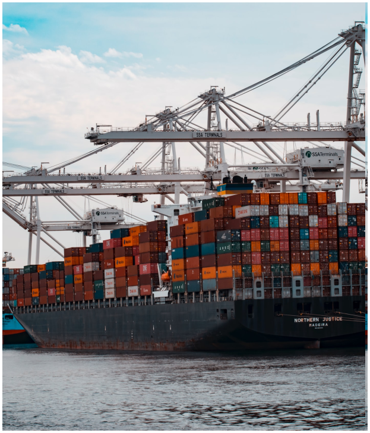

<!DOCTYPE html>
<html lang="en" class="no-js"></html>
<html>
  <head>
    <meta charset="utf-8" />
    <meta name="viewport" content="width=device-width, initial-scale=1.0">
    <title>Russell Tran</title>
  <link rel="shortcut icon" type="image/png" href="favicon.png">
    <link rel="stylesheet" type="text/css" href="algo.css" />
    <link rel="stylesheet" type="text/css" href="styleguide.css" />
    <link rel="stylesheet" type="text/css" href="globals.css" />
    <link rel="stylesheet" href="css/style.css" />
    <link href='https://fonts.googleapis.com/css?family=Montserrat:400,700' rel='stylesheet' type='text/css'>
    <script type='text/javascript' src='js/particle.min.js'></script>
    <script type='text/javascript' src='js/demo.js'></script>
  </head>
  <body style="margin: 0; background: #ffffff">
    <span class="hidden-mobile">
      <input type="hidden" id="anPageName" name="page" value="algo" />
      <div class="container-center-horizontal">
        <div class="algo screen">
          <div class="front-bg" id="russ-background"></div>
          <div class="front-bg-1"></div>
          <div class="front-bg-2"></div>
          <div class="front-bg-3"></div>
          
          <h1 class="name lato-bold-log-cabin-48px">Russell Tran</h1>
          <div class="clemente-container">
            <div class="san-clemente-hs lato-normal-log-cabin-15px">San Clemente HS</div>
            
          </div>
          <div class="overlap-group-container">
            <div class="overlap-group2 lato-normal-log-cabin-15px">
              
              
              <p class="san-juan-hills-high-school">San Juan Hills High School</p>
              <div class="capistrano-valley-hs">Capistrano Valley HS</div>
            </div>
            <div class="overlap-group4">
              
              <div class="aliso-niguel-hs lato-normal-log-cabin-15px">Aliso Niguel HS</div>
            </div>
          </div>
          <div class="overlap-group5">
            
            <div class="name-1 lato-normal-log-cabin-15px">Dana Hills HS</div>
          </div>
          <div class="overlap-group1">
            
            <div class="district-office lato-normal-log-cabin-15px">District Office</div>
          </div>
          <div class="tesoro-container">
            
            <div class="tesoro-hs lato-normal-log-cabin-15px">Tesoro HS</div>
          </div>
          
          
          
          
          
          
          
          
          
          
          
          
          
          
          <div class="climate-change lato-bold-log-cabin-32px">Climate change</div>
          <div class="background lato-normal-shark-16px">BACKGROUND</div>
          <div class="climate-change-1 lato-bold-log-cabin-32px">Climate change</div>
          <div class="background-1 lato-normal-shark-16px">BACKGROUND</div>
          <div class="biology lato-bold-log-cabin-32px">Biology</div>
          <div class="background-2 lato-normal-shark-16px">BACKGROUND</div>
          <div class="engineering lato-bold-log-cabin-32px">Engineering</div>
          <div class="background-3 lato-normal-shark-16px">BACKGROUND</div>
          <div class="engineering-1 lato-bold-log-cabin-32px">Engineering</div>
          <div class="background-4 lato-normal-shark-16px">BACKGROUND</div>
          <div class="front-bg-4"></div>
          <div class="front-bg-5"></div>
          <div class="front-bg-6"></div>
          
          
          <div class="overlap-group6">
            
            <div class="keoni-gandall lato-normal-log-cabin-15px">Keoni Gandall</div>
          </div>
          <p class="apprentice-for-diy-s lato-normal-log-cabin-20px">
            Apprentice for DIY synthetic biologist Keoni Gandall<br />(June 2021 — September 2021)
          </p>
          <div class="supply-chain-logistics lato-bold-log-cabin-32px">Supply chain logistics</div>
          <div class="background-5 lato-normal-shark-16px">BACKGROUND</div>
          <p class="software-design-rese lato-normal-log-cabin-20px">
            Software design research <br />(September 2018 — 2023+), and<br /><br />Apprentice for a freight broker<br />(March
            2020 — April 2020)
          </p>
          <div class="overlap-group3">
            
            
          </div>
          <p class="hardware-and-softwar lato-normal-log-cabin-20px">
            <span class="lato-normal-log-cabin-20px"
              >Hardware and software tooling for biology research labs<br /><br /></span
            ><span class="span1"
              >- Opentrons pipetting robot programming &amp; door-to-door sales <br />- Cheap Raspberry Pi gel imager<br />-
              Automatic gel image annotation software<br />- Integrating autostainers &amp; hematology analyzers into data
              pipelines<br />- Integrated barcoding, image, and metadata backend + GUI system for tracking plants in
              plates and in greenhouse<br />- Custom imaging cart apparatus for corn plants<br />- E. coli bioreactor in
              5L jerrycan &amp; isolate competent cells using vacuum filtration<br /></span
            ><span class="lato-normal-log-cabin-20px"><br />(December 2017 — March 2021)</span>
          </p>
          <p class="engineering-lead-for lato-normal-log-cabin-20px">
            Engineering lead for vehicle tracking RFID antenna network as the first Software Engineering Intern at
            <br />Elon Musk’s The Boring Company<br /><br />Las Vegas Convention Center, Nevada<br />(July 2020 —
            September 2020)
          </p>
          <p class="marketing-pr-and-s lato-normal-log-cabin-20px">
            Marketing, PR, and stakeholder management
          </p>
          <p class="introduced-and-passe lato-normal-log-cabin-20px">
            Introduced and passed an $18.3 million solar installation project in Capistrano Unified School District,
            California<br /><br />Yields $21.2 million in net energy cost savings for public school education<br /><br />Offsets
            90,000 tons of CO2 over 25 years <br /><br />(September 2014 — May 2017)
          </p>
          <div class="portfolio">Mantis Company<br><br>B.S. Computer Science,<br>Stanford University<br><br><u><a href="#russ-background">Background</a></u></div>
        </div>
      </div>
    </span>
    <section id="portfolio">
      <div>
        <h1 class="portfolio-title">
          Russell Tran Portfolio
        </h1>
        <div class="portfolio-contents">
          <div class="portfolio-filter">
            <button class="active-filter">
              See All
            </button>
            <button>
              Freight
            </button>
            <button>
              Climate
            </button>
            <button>
              Bio
            </button>
            <button>
              Other
            </button>
          </div>
          <div class="projects">
            <div>
              <div class="p-header">
                <div class="p-title">
                 Port "Terminal Watcher" + Outlook Email Templating
                </div>
                <div class="p-date">
                  July 2019 - August 2019
                </div>
              </div>
              <div class="p-tags">
                <div>
                  Freight
                </div>
              </div>
              <div class="p-body">
                <div class="p-text">
                  <div class="p-description">
                    <p>During the summer of 2019, I spent my free time doing outreach to freight and customs brokers in the greater Los Angeles Area to study potential software interventions to the freight industry. This resulted in 10 conversations and an opportunity to shadow 2 businesses in-person for 10 hours each. 
                    </p>
                    <p>I discovered that the main "data protocol" by which freight organizations communicate today is PDFs overs email. In both businesses where I shadowed, the staff received so many PDFs that they had to print them out and sort them in physical folders, and then rescan them when they wanted to email the PDF to someone else. Each employee received hundreds of emails a day and sent at least 100-200 per day. I asked someone what tools they used to handle all of these emails, and the answer was "I learned to type faster."
                    </p>
                    <p></p>This inspired me to prototype some software solutions to enhance their productivity. The first was a Visual Basic script on Outlook that could be run via hotkey to write templated emails. This was because I noticed that most of the emails being written were memorized responses that always followed the same set of 4-5 patterns. The largest barrier to user adoption for this prototype was that the user needed to practice using the hotkeys until it became faster than their typing speed.
                    </p>
                    <p>The second offering was a Python script that would login for the user on 10-20 different ocean port terminal websites and check the status of the user’s shipping containers, then report the result back into a single dashboard. The old standard procedure was for an employee to click on the 10-20 different websites every hour and refresh the page to check on container status. The only available software platforms that aggregated these data were eModal and Crux Systems, but both lacked comprehensive coverage and Crux Systems’ performance was too slow (also later acquired by Flexport and shut down). Moreover, it seemed new features could be added, such as the ability to save a credit card and pay customs’ fees from the singular dashboard, and SMS notifications of container status changes so that a broker could go out to lunch without worrying about missing a refresh.
                    </p>
                    </div>
                  <div class="p-links">
                    Links: 
                    <a href="https://blog.russelltran.com/an-open-internet-protocol-for-freight">
                      Writeup
                    </a>,
                    <a href="https://github.com/Russell-Tran/terminal-watcher-public">
                      Github 1
                    </a>,
                    <a href="https://github.com/Russell-Tran/freight-email-machine-outlook-extension">
                      Github 2
                    </a>
                  </div>
                </div>
                <div class="p-thumbnail">
                  
                </div>
              </div>
            </div>
            
            <div>
              <div class="p-header">
                <div class="p-title">
                  Unblock the Port
                </div>
                <div class="p-date">
                  October 2021 - December 2021
                </div>
              </div>
              <div class="p-tags">
                <div>
                  Freight
                </div>
              </div>
              <div class="p-body">
                <div class="p-text">
                  <div class="p-description">
                    <p>
                      As both a southern California native and a freight enthusiast, I was astounded by the supply chain bottleneck at the Port of Los Angeles / Port of Long Beach complex in 2021. It was a globally, historically unprecedented backup of 100+ container ships, representing >$100M+ per day of direct lost value in goods delays, and a major contributor to inflation in the U.S. economy. Therefore, I was inspired to give 10% of my hobby time to researching the issue and lobbying for solutions.
                    </p>
                    <p>
                      In this project, I interviewed 5 industry experts to understand the situation better. I put out two (very small) petitions in favor of increasing the allowable container stack height on land properties in the City of Los Angeles, in order to help absorb the glut of empty shipping containers. The first petition was to my U.S. House Representative, Mike Levin, and was able to get a meeting with one of his staff after 27 petition signatures. The second petition was directly to Mayor Eric Garcetti and Council Members of LA City, but lost momentum.
                    </p>
                    <p>
                      This baby grassroots project had 4 members, and notably we also proposed leasing a 360 acre empty plot of land in Los Angeles adjacent to a railway to develop it into a surplus yard for empty shipping containers. This did not manifest due to lack of momentum.
                    </p>
                    <p>
                      Fortunately, as of November 2022, the bottleneck has been officially declared over, but this project was an insightful use of time. It also speaks to the extent to which there is a shortage of freight management expertise and innovation in the economy, such that there simply wasn’t enough emergency intervention from industry veterans to immediately resolve the issue.
                    </p>
                  </div>
                  <div class="p-links">
                    Links:
                    <a href="https://archive.ph/nzvAx">
                      Website
                    </a>,
                    <a href="https://www.change.org/p/mike-levin-rep-mike-levin-help-us-unblock-the-port">
                      Petition 1
                    </a>,
                    <a href="https://archive.ph/GWRVJ">
                      Petition 2
                    </a>
                  </div>
                </div>
                <div class="p-thumbnail">
                  
                </div>
              </div>
            </div>
            
          </div>
        </div>
      </div>
      <br>
      <br>
      <br>
      <br>
      <br>
      <br>
      <br>
      <br>
      <br>
      <br>
      <br>
      <br>
      <br>
      <br>
      <br>
      <br>
    </section>
  </body>
</html>
